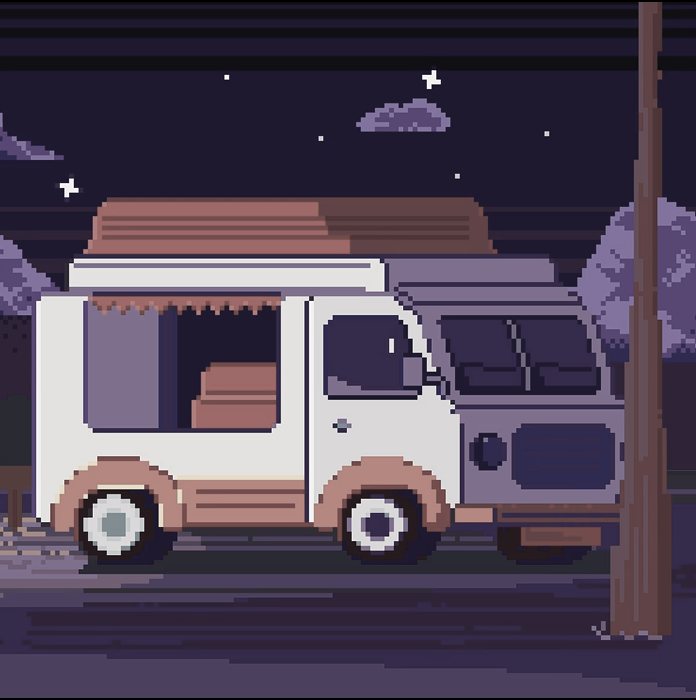

-
Фритрек и нулевой спринт: Подготовка к работе

<с нуля>
Это было самое начало пути. На этом этапе важно было проникнуться основами и настроиться на учёбу. И, возможно, подумать, как новые знания могут повлиять на ваше будущее.
Я уже изучал JavaScrpt до этого. Но верстка была для меня чем-то принцпиально новым. Мои программы по большей части работали, но выглядеи как набор элементов, хаотично разбросанных по белому экрану
-
1 спринт: Я — чистый лист
<первые шаги>
На первых этапах мы работали со страхами и сомнениями, которые часто испытывают новички. Один из них — страх перед чистым листом. Это, конечно же, намного сложнее, чем боязнь куска бумаги. Часто за этим ощущением скрываются более глубокие вопросы: с чего начать? а вдруг будет слишком сложно? что, если я не справлюсь?
Первая мысль была: "Вёрстка - это же скучно! Сделал отступ у одного элемента, затем у другого..." А потом я более подробно познакомился с flex и grid и жизнь сразу заиграла новыми красками!
1 спринт: А если не получится?
<оно тебе надо!>
Первый проект — позади! Но это всё ещё самое начало пути. Радость могла быстро померкнуть и смениться ожиданием провала. Или вы, наоборот, могли вдохновиться успехами и поверить в себя.
Когда я увидел первый проект, реакция была однозначна: "Это невозможно..." Но я верстал элемент за элементом и с каждой следующей строчкой кода мой пессимизм таял. В итоге спокойно уожился в дедлайн!
2 спринт: Погоня за идеалом
<pixel-perfect>
На этом этапе вы уже достаточно разбирались в основах вёрстки, чтобы понять, как много ещё впереди. Вы могли попытаться погнаться за идеалом и понять, что он недостижим. А, может, вы вовсе и не подвержены перфекционизму и вместо того, чтобы сделать идеально, старались просто сделать.
Второй спринт я начал с опазданием, поскольку повредил глаз. В итоге пару недель в газах немного двоилось, как будто забыл выключить плагиин PixelPerfect
2 спринт: О тех, кто рядом
<посмотри в окно>
Всё это время вы были не одиноки (хотя, возможно, иногда и чувствовали, что одни против целого мира). Вас окружали одногруппники, команда сопровождения и просто близкие люди, которым можно пожаловаться, если очередной макет просто так не поддавался. Осваивать что-то новое легче, когда рядом есть единомышленники, не правда ли?
Псевдоклассы и псевдоэлементы, это было здорово! Оказывается парой строчек в css можно добиться результата, сопоставимого нескольким функциям JavaScript.
3 спринт: Обходные стратегии
<адаптивная вёрстка>
На этом курсе вы постоянно решали разные задачи. В какой-то момент вам могло показаться, что решения просто иссякли. Значит, пришло время посмотреть на задачу под другим углом.
Переменные, которые меняются в зависимости от разлчных факторов и медиазапросы. Это было увлекательно!
3 спринт: Когда опускаются руки
<сложно сосредоточиться>
Во время учёбы часто возникает чувство, когда не знаешь, за что хвататься. Вроде и проектную пора сдавать, и задачи хочется порешать, и в теории получше разобраться, и жизнь не забыть пожить. В такие моменты очень нужна концентрация. Вспомните, откуда вы её черпали.
Конец спринта был довльно нервным. Особенно запомнились автотесты, выдающие пробему раз за разом. Было несколько критических ошибок, перечеркивающих часы работы. Зато этап ревью прошел на удивение легко.
«Сейчас я здесь»
<закрывающий тег>
Сейчас вы уже очень много знаете о вёрстке. Но это только начало. Во-первых, впереди ещё много материала про «красотищу». Во-вторых, с окончанием курса учёба не заканчивается. Вёрстка — это целый мир. И этот мир постоянно меняется. Познать его полностью не получится, но это тот случай, когда важен сам процесс познания. Ведь часто путь — и есть результат.
Это было супер!